v2.6.1 · 10 November 2026
Your Coach Workspace design, implemented
The seven supplied references now define the page structure,
hierarchy, colors, cards, tables, navigation and mobile settings
flow.
READY — DEPLOYED AND VERIFIED
Baseline and scope
Extends the live v2.6.0 application
(6a76aa5821008047adef9c197cfd643457dc342b); implementation
started from main at 78e8d7d. This release corrects the earlier
approximation and applies the actual reference layouts. Existing
Laravel/Inertia/React architecture, independent program
subscriptions, activation, scheduling and ownership remain in
place. No migration or new dependency.
Reference-by-reference delivery
| Reference |
Implemented behavior |
| Coach Overview |
Greeting and date, navy focus banner, four metrics and
four compact panels: Priority inbox, Today’s training,
Coaching workload and Trainee momentum. Bounded lists
with explicit View all; real account metrics.
|
| Trainees |
Summary counts, status chips before search, six-column
roster, weekly progress bars, separate coverage and
attention states, next actions, live search/sort,
pagination and mobile cards.
|
| Programs |
Two-column cards by default, Ready/Draft filters,
search, grid/list toggle, thumbnails with full-image
previews, footer statistics and Preview/Assign controls.
Existing edit/duplicate/delete actions retained.
|
| Subscriptions |
Subscriptions/Coaching packages tabs, status counts,
search and More filters, six-column table with program,
package, coverage start/end dates, remaining time,
status and compact actions. Pause/resume/end remain
independent per program.
|
| Workspace switcher |
Dark desktop sidebar and grouped white popover for
workspace, coaching and account links. Mobile switcher
and bottom navigation remain usable.
|
| Mobile settings |
Profile summary, four section buttons, focused
profile/preferences/notifications/devices screens, large
controls and Back navigation, including 320 × 480.
|
| Desktop settings |
Blue settings accents, profile summary with real counts,
left section navigation and all four sections stacked.
One Save changes action persists profile, training
preferences and notification preferences together;
Discard restores saved values.
|
Functional details and preserved behavior
Settings validates all submitted sections before writing and
updates only the authenticated Coach under a user lock and
database transaction. Unknown ownership/result fields never
become authoritative. Personal body-weight history is untouched.
Active coaching and attention are distinct roster filters. Ready
to assign means authored training days contain exercises; dates
and subscription coverage remain validated during assignment.
Original subscription periods, independent assignments, plan
thumbnails, Calendar, active workouts, History, Progress/PRs,
program controls and Personal Workspace continue using their
existing services. The dedicated account page remains available
inside Coach context. No user data was migrated.
Verification
| Gate |
Result |
| Full SQLite |
650 tests · 13,022 assertions passed |
| Full isolated MySQL |
650 tests · 13,022 assertions passed |
| JavaScript |
38 tests passed |
| Real-process concurrency |
114 checks across CoachSetup, Coaching, Program,
ProgramControl, RecurringSchedule, WeeklySchedule and
Notifications
|
| Chromium / WebKit |
155 checks: reference screens, combined settings
save/reload/discard, four mobile sections and Back,
filters, subscription pause/resume, workspace switch,
full-image preview and PWA. Layout widths 320, 360, 375,
390, 430, 768, 1024, 1100, 1280, 1440 and 1920; relevant
suites cover their specified subsets.
|
| Production build / formatting |
Vite, Pint, Prettier and git diff checks passed |
| Composer |
Validation and platform requirements passed; locked
audit: zero advisories, zero abandoned dependencies
|
| HTTP security/privacy/filter checks |
8 passed using disposable accounts |
Three focused backend tests cover combined settings writes,
validation/ownership isolation and active-coverage filtering.
Browser testing caught and fixed an incompatible form-reset
callback. No runtime browser errors remain.
Machine-readable evidence:
release gates,
browser checks,
concurrency,
local data/media integrity.
Implementation screenshots
Live disposable QA data, using the deployed application.
Workspace menu screenshots were captured locally with the same
immutable source.
Coach Overview
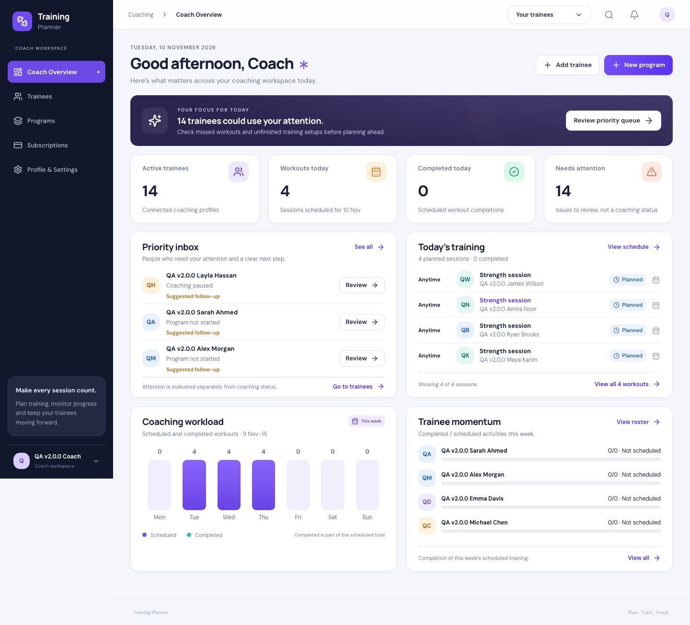
Coach Overview · Chromium, 1440 px
Trainees
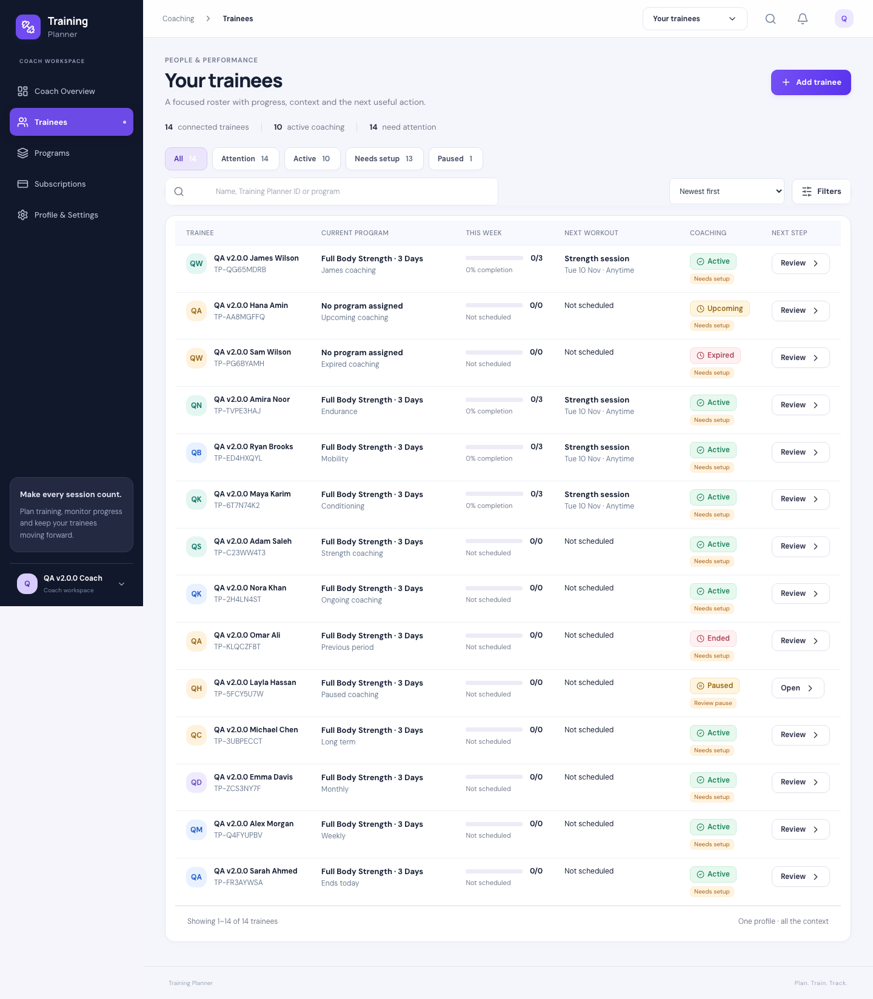
Trainees · Chromium, 1440 px
Programs
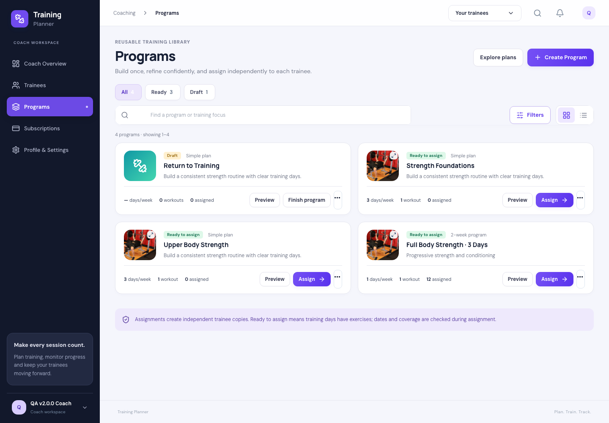
Programs · Chromium, 1440 px
Subscriptions
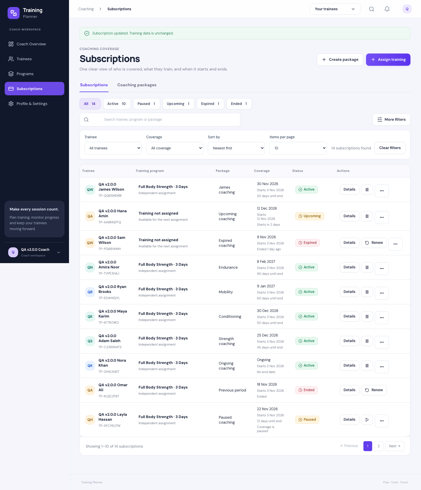
Subscriptions · Chromium, 1440 px
Desktop Profile & Settings
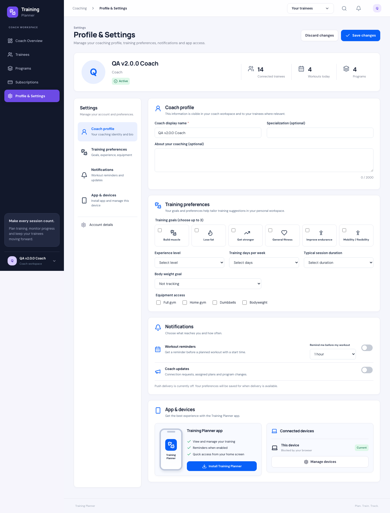
Desktop Profile & Settings · Chromium, 1440 px
Workspace menu
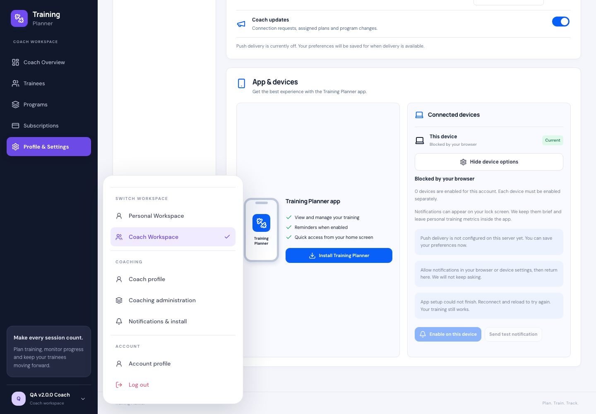
Workspace menu · Chromium, 1440 px
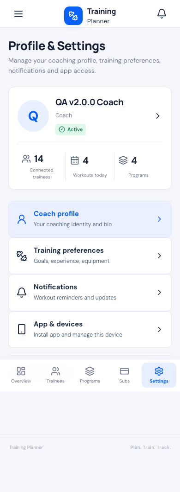
Settings directory · 390 px
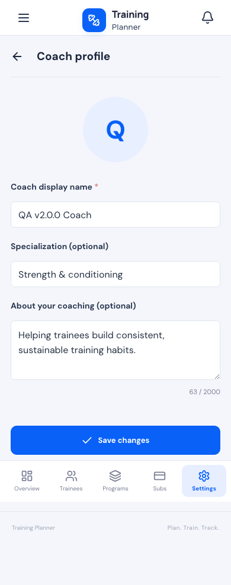
Coach profile · 390 px
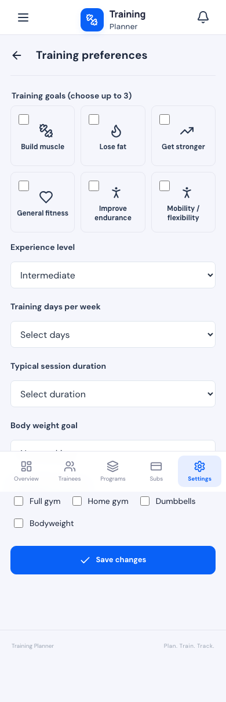
Training preferences · 390 px
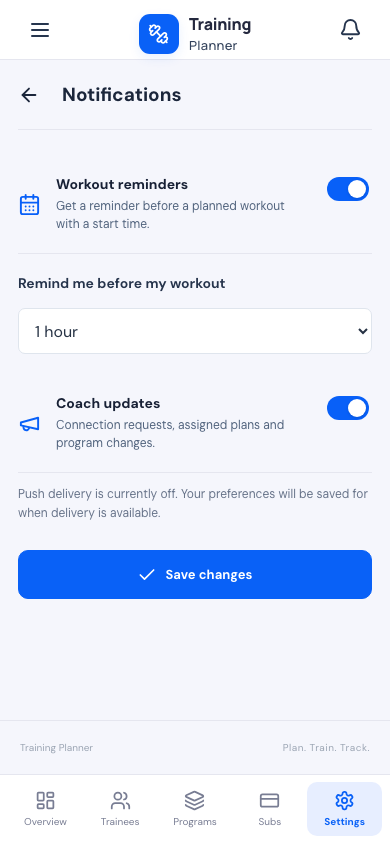
Notifications · 390 px
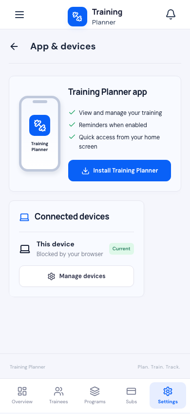
App & devices · 390 px
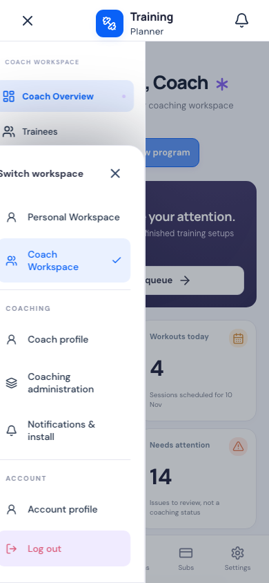
Workspace switcher · 390 px
Deliberate differences from concept data
All names, counts, dates and progress come from the signed-in
account. The concept/sample-team badge and fictional data are
not shown. Photos use existing training media and retain
full-image viewing. The app has no team selector or Coach avatar
upload, so those are not presented as working features.
Notifications exposes the two supported preferences: workout
reminders and Coach updates. Activity digests and product-news
delivery are not implemented. App installation uses
browser-supported installation or instructions. Offline fallback
is preserved; authenticated offline program access is not
promised. Push delivery remains disabled in the approved
production configuration. No physical-device testing is claimed.
Files and release
Target tag: v2.6.1. Existing tags are preserved.
Runtime source is deployed from the immutable release archive;
report-only deployment evidence is recorded afterward.
Changed application and test files
-
app/Http/Controllers/CoachController.php
resources/css/coach-refresh.cssresources/js/Components/AppLayout.jsx-
resources/js/Features/CoachWorkspace.jsx
-
resources/js/Features/Notifications/InstallCard.jsx
-
resources/js/Features/SubscriptionTable.jsx
resources/js/Pages/Coach/Overview.jsx-
resources/js/Pages/Coach/Subscriptions.jsx
resources/js/Pages/Coach/Trainees.jsx-
resources/js/Pages/Notifications/Index.jsx
-
resources/js/Pages/TrainingPlans/Index.jsx
tests/Browser/coach-design-refresh.mjs-
tests/Browser/subscription-directory.mjs
tests/Feature/CoachWorkspaceTest.phpresources/js/Pages/Coach/Settings.jsx
Production deployment — verified
READY — DEPLOYED AND VERIFIED on
training.ahmaddalao.com. Immutable tag v2.6.1; commit
f5829125d0255fc6a9937e8e0809952178e23127, pushed to
origin/main. Earlier tags remain unchanged.
Preflight matched all 8,043 v2.6.0 source/runtime hashes. Fresh
database, runtime, uploads and environment backups were created
at 2026-11-10T10:00:32+00:00 and verified
before replacement. The existing Hostinger maintenance, backup,
stage, cache and verify procedure deployed only the immutable
release archive.
| Backup |
Bytes |
SHA-256 |
| Database gzip |
54,251 |
6001ae6b8543ea1f771445af59d264aa4bd09b0b3103357040d5ec0eb41cff57
|
| Runtime ZIP |
69,491,482 |
b4de60fb2a1f61e07c7e6f2a994acc2b93e5cdaa7346ac0e04cbcc9a09c432d1
|
| Uploads ZIP |
34,565,564 |
632b6215f125dbedc154e8137efb57a4d420804b05f4e6ece403feafe59ac653
|
The environment was copied separately with restricted
permissions and its hash matched afterward. Backups remain in
private server storage outside public access.
Release artifact: 96 files, 491,688 bytes. Final verification
matched 8,124 runtime hashes. PHP 8.3.36; database
11.8.9-MariaDB-log. All 17 existing migrations remain unchanged.
No migration ran. Production is out of maintenance.
Live QA passed all 155 browser checks across
Chromium and WebKit and 8 HTTP checks. This included
desktop/mobile screens, unified Settings save/reload/discard,
mobile Back navigation, live roster/program/subscription
filters, pause/resume isolation, workspace switching, full-image
preview and PWA. Public asset verification checked 1059 assets
(1055 exact hashes; 4 CDN PNG re-encodings with identical
decoded pixels) and five public endpoints.
Cleanup removed 16 QA accounts and their records. Row-by-row
diagnostics confirm
875 original rows across 22 tables and
567 original media files unchanged. No
missing/changed originals, added rows, extra media or QA users
remain. Environment fingerprints match.
Push delivery remains disabled; manifest, service worker,
offline fallback and existing device/preference infrastructure
remain available. No VAPID, cron or production configuration
change. Temporary deployment endpoint, release archive directory
and local credential ledgers were removed. No known BLOCKER or
HIGH issue remains.
Deployment evidence ·
Live browser checks